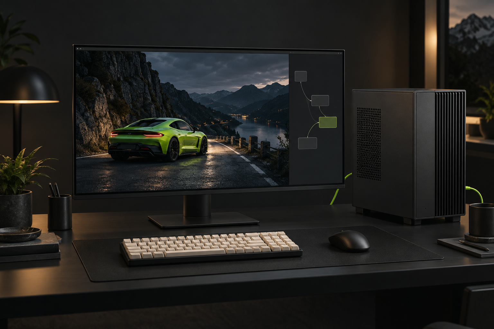
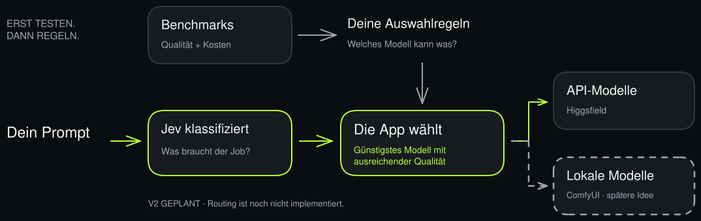

VOM VERGLEICH ZUR AUSWAHL
Modelle testen.
Geld sparen.
Das günstigste Modell finden,
das den Job gut genug macht.

KI-Illustrationen · keine Benchmark-Ergebnisse
-
01HEUTE
Vergleichen
6 Bild- und 6 Videomodelle.
Ein Prompt, Ergebnisse nebeneinander. -
02ALS NÄCHSTES
Benchmarken
Qualität, Kosten und Laufzeit messen.
Daraus klare Auswahlregeln ableiten. -
03V2 / GEPLANT
Mit Jev routen
Prompt rein. Passendes Modell wählen.
Ersetzt das „Freie Testfeld“. -
04SPÄTER / IDEE
Lokal erweitern
Zwei weitere Tabs für KI-Videos.
Mit eigenen ComfyUI-Workflows.
DAS ZIELBILD / GEPLANT
Qualität entscheidet. Der Preis auch.

Lokales Routing erst mit passenden Benchmarks und verfügbarer Hardware. Auch Strom und Laufzeit zählen.